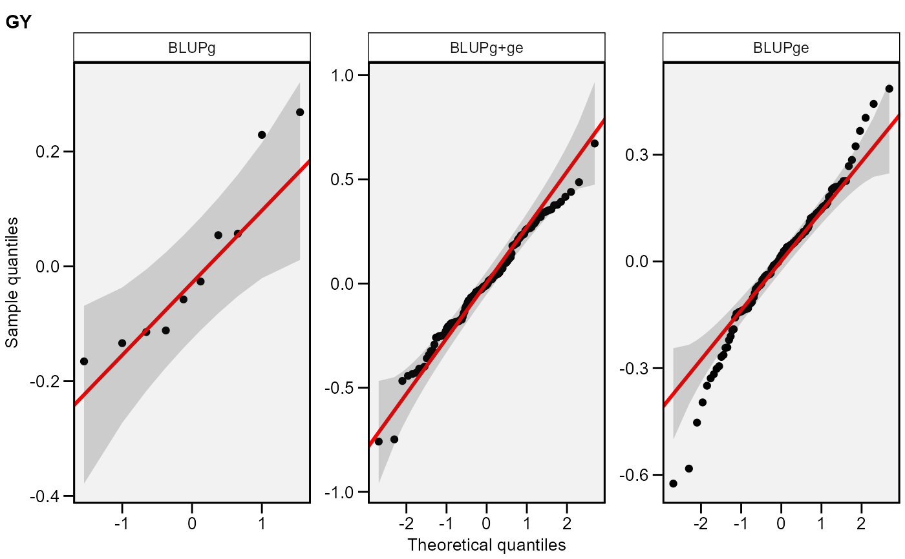

![[Stable]](figures/lifecycle-stable.svg)
Genotype analysis in multi-environment trials using mixed-effect or random-effect models.
The nature of the effects in the model is chosen with the argument
random. By default, the experimental design considered in each
environment is a randomized complete block design. If block is
informed, a resolvable alpha-lattice design (Patterson and Williams, 1976) is
implemented. The following six models can be fitted depending on the values
of random and block arguments.
Model 1:
block = NULLandrandom = "gen"(The default option). This model considers a Randomized Complete Block Design in each environment assuming genotype and genotype-environment interaction as random effects. Environments and blocks nested within environments are assumed to fixed factors.Model 2:
block = NULLandrandom = "env". This model considers a Randomized Complete Block Design in each environment treating environment, genotype-environment interaction, and blocks nested within environments as random factors. Genotypes are assumed to be fixed factors.Model 3:
block = NULLandrandom = "all". This model considers a Randomized Complete Block Design in each environment assuming a random-effect model, i.e., all effects (genotypes, environments, genotype-vs-environment interaction and blocks nested within environments) are assumed to be random factors.Model 4:
blockis notNULLandrandom = "gen". This model considers an alpha-lattice design in each environment assuming genotype, genotype-environment interaction, and incomplete blocks nested within complete replicates as random to make use of inter-block information (Mohring et al., 2015). Complete replicates nested within environments and environments are assumed to be fixed factors.Model 5:
blockis notNULLandrandom = "env". This model considers an alpha-lattice design in each environment assuming genotype as fixed. All other sources of variation (environment, genotype-environment interaction, complete replicates nested within environments, and incomplete blocks nested within replicates) are assumed to be random factors.Model 6:
blockis notNULLandrandom = "all". This model considers an alpha-lattice design in each environment assuming all effects, except the intercept, as random factors.
Usage
gamem_met(
.data,
env,
gen,
rep,
resp,
block = NULL,
by = NULL,
random = "gen",
prob = 0.05,
verbose = TRUE
)Arguments
- .data
The dataset containing the columns related to Environments, Genotypes, replication/block and response variable(s).
- env
The name of the column that contains the levels of the environments.
- gen
The name of the column that contains the levels of the genotypes.
- rep
The name of the column that contains the levels of the replications/blocks.
- resp
The response variable(s). To analyze multiple variables in a single procedure a vector of variables may be used. For example
resp = c(var1, var2, var3).- block
Defaults to
NULL. In this case, a randomized complete block design is considered. If block is informed, then an alpha-lattice design is employed considering block as random to make use of inter-block information, whereas the complete replicate effect is always taken as fixed, as no inter-replicate information was to be recovered (Mohring et al., 2015).- by
One variable (factor) to compute the function by. It is a shortcut to
dplyr::group_by().This is especially useful, for example, when the researcher want to analyze environments within mega-environments. In this case, an object of class waasb_grouped is returned.- random
The effects of the model assumed to be random. Defaults to
random = "gen". See Details to see the random effects assumed depending on the experimental design of the trials.- prob
The probability for estimating confidence interval for BLUP's prediction.
- verbose
Logical argument. If
verbose = FALSEthe code will run silently.
Value
An object of class waasb with the following items for each
variable:
fixed Test for fixed effects.
random Variance components for random effects.
LRT The Likelihood Ratio Test for the random effects.
BLUPgen The random effects and estimated BLUPS for genotypes (If
random = "gen"orrandom = "all")BLUPenv The random effects and estimated BLUPS for environments, (If
random = "env"orrandom = "all").BLUPint The random effects and estimated BLUPS of all genotypes in all environments.
MeansGxE The phenotypic means of genotypes in the environments.
modellme The mixed-effect model of class
lmerMod.residuals The residuals of the mixed-effect model.
model_lm The fixed-effect model of class
lm.residuals_lm The residuals of the fixed-effect model.
Details A list summarizing the results. The following information are shown:
Nenv, the number of environments in the analysis;Ngenthe number of genotypes in the analysis;Meanthe grand mean;SEthe standard error of the mean;SDthe standard deviation.CVthe coefficient of variation of the phenotypic means, estimating WAASB,Minthe minimum value observed (returning the genotype and environment),Maxthe maximum value observed (returning the genotype and environment);MinENVthe environment with the lower mean,MaxENVthe environment with the larger mean observed,MinGENthe genotype with the lower mean,MaxGENthe genotype with the larger.ESTIMATES A tibble with the genetic parameters (if
random = "gen"orrandom = "all") with the following columns:Phenotypic variancethe phenotypic variance;Heritabilitythe broad-sense heritability;GEr2the coefficient of determination of the interaction effects;h2mgthe heritability on the mean basis;Accuracythe selective accuracy;rgethe genotype-environment correlation;CVgthe genotypic coefficient of variation;CVrthe residual coefficient of variation;CV ratiothe ratio between genotypic and residual coefficient of variation.formula The formula used to fit the mixed-model.
References
Olivoto, T., A.D.C. Lúcio, J.A.G. da silva, V.S. Marchioro, V.Q. de Souza, and E. Jost. 2019. Mean performance and stability in multi-environment trials I: Combining features of AMMI and BLUP techniques. Agron. J. 111:2949-2960. doi:10.2134/agronj2019.03.0220
Mohring, J., E. Williams, and H.-P. Piepho. 2015. Inter-block information: to recover or not to recover it? TAG. Theor. Appl. Genet. 128:1541-54. doi:10.1007/s00122-015-2530-0
Patterson, H.D., and E.R. Williams. 1976. A new class of resolvable incomplete block designs. Biometrika 63:83-92.
Author
Tiago Olivoto tiagoolivoto@gmail.com
Examples
# \donttest{
library(metan)
#===============================================================#
# Example 1: Analyzing all numeric variables assuming genotypes #
# as random effects #
#===============================================================#
model <- gamem_met(data_ge,
env = ENV,
gen = GEN,
rep = REP,
resp = everything())
#> Evaluating trait GY |====================== | 50% 00:00:00
Evaluating trait HM |============================================| 100% 00:00:01
#> Method: REML/BLUP
#> Random effects: GEN, GEN:ENV
#> Fixed effects: ENV, REP(ENV)
#> Denominador DF: Satterthwaite's method
#> ---------------------------------------------------------------------------
#> P-values for Likelihood Ratio Test of the analyzed traits
#> ---------------------------------------------------------------------------
#> model GY HM
#> COMPLETE NA NA
#> GEN 1.11e-05 5.07e-03
#> GEN:ENV 2.15e-11 2.27e-15
#> ---------------------------------------------------------------------------
#> All variables with significant (p < 0.05) genotype-vs-environment interaction
# Distribution of random effects (first variable)
plot(model, type = "re")

# Genetic parameters
get_model_data(model, "genpar")
#> Class of the model: waasb
#> Variable extracted: genpar
#> # A tibble: 9 × 3
#> Parameters GY HM
#> <chr> <dbl> <dbl>
#> 1 Phenotypic variance 0.181 5.52
#> 2 Heritability 0.154 0.0887
#> 3 GEIr2 0.313 0.397
#> 4 h2mg 0.815 0.686
#> 5 Accuracy 0.903 0.828
#> 6 rge 0.370 0.435
#> 7 CVg 6.26 1.46
#> 8 CVr 11.6 3.50
#> 9 CV ratio 0.538 0.415
#===============================================================#
# Example 2: Unbalanced trials #
# assuming all factors as random effects #
#===============================================================#
un_data <- data_ge %>%
remove_rows(1:3) %>%
droplevels()
model2 <- gamem_met(un_data,
env = ENV,
gen = GEN,
rep = REP,
random = "all",
resp = GY)
#> Evaluating trait GY |============================================| 100% 00:00:01
#> Method: REML/BLUP
#> Random effects: GEN, REP(ENV), ENV, GEN:ENV
#> Fixed effects: -
#> Denominador DF: Satterthwaite's method
#> ---------------------------------------------------------------------------
#> P-values for Likelihood Ratio Test of the analyzed traits
#> ---------------------------------------------------------------------------
#> model GY
#> COMPLETE NA
#> GEN 1.31e-05
#> REP(ENV) 9.23e-08
#> ENV 9.33e-17
#> GEN:ENV 2.11e-11
#> ---------------------------------------------------------------------------
#> All variables with significant (p < 0.05) genotype-vs-environment interaction
get_model_data(model2)
#> Class of the model: waasb
#> Variable extracted: genpar
#> # A tibble: 9 × 2
#> Parameters GY
#> <chr> <dbl>
#> 1 Phenotypic variance 0.907
#> 2 Heritability 0.0308
#> 3 GEIr2 0.314
#> 4 h2mg 0.813
#> 5 Accuracy 0.902
#> 6 rge 0.371
#> 7 CVg 6.24
#> 8 CVr 11.6
#> 9 CV ratio 0.536
# }